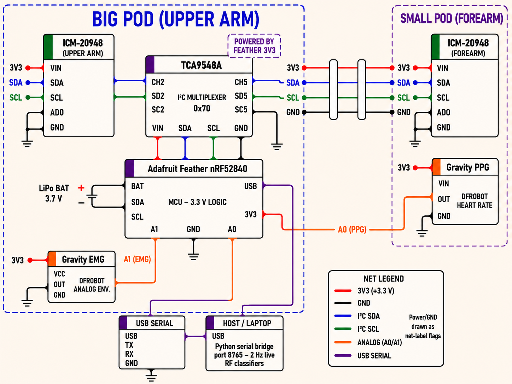

From wearable sensing to real-time feedback — open repositories, the system architecture, the processing pipeline, and the full engineering specs.
All project code is open on GitHub. The firmware, the Python bridge, the classifier training pipeline, and the Flutter companion app each live in their own folder of the project repository.
Adafruit Feather nRF52840 firmware: I²C mux drivers, IMU/EMG/PPG sampling loop, USB serial streaming.
Feature extraction, Random Forest training, GroupKFold cross-validation, and confusion matrix generation.
Reads serial packets from the MCU and broadcasts to the Flutter app over WebSocket for real-time inference.
iOS Flutter app: live form feedback, rep counting, session history backed by Supabase.
The full data path from raw sensor to mobile UI. Each layer is loosely coupled so individual components can be swapped without rewriting the whole stack.

Adafruit nRF52840 · ICM-20948 × 2 · DFRobot EMG · DFRobot PPG · TCA9548A mux
Arduino C++ · I²C · Analog read · USB Serial @ 115200 baud
Python · pyserial · pandas · scikit-learn · websockets
Flutter · Dart · Supabase (Postgres + Auth)
The software pipeline that turns raw sensor voltages into live rehabilitation feedback.
Embedded firmware streams synchronized IMU, EMG, and PPG signals over wired USB serial.
Filtering, feature extraction, per-exercise Random Forest inference, and metric generation.
Low-latency communication between the Python bridge and the Flutter app.
Live rehabilitation visualization, rep tracking, analytics, and feedback.
Sampling, filtering, and latency parameters tuned for real-time rehabilitation monitoring.
| Parameter | Value | Purpose |
|---|---|---|
| IMU sampling | ~60 Hz | Motion / elbow-angle tracking. |
| EMG envelope | ~19.6 Hz | Muscle-activation display (not a classifier feature). |
| PPG update | ~1 Hz | Heart-rate variation. |
| Serial baud | 115200 | Stable multi-sensor streaming. |
| Classifier | Random Forest | Per-exercise form classification. |
EMG is captured as a rectified envelope and used for activation display only — it is not an input feature to the form classifier.
| Signal | Filtering | Purpose |
|---|---|---|
| EMG | 20–250 Hz analog bandpass | On-sensor noise reduction before enveloping. |
| IMU | Complementary + 4 Hz LPF | Stable elbow-angle estimation. |
| PPG | EMA smoothing | Heart-rate stabilization. |
The 20–250 Hz bandpass is performed in hardware on the DFRobot Gravity EMG module; the firmware then samples the rectified envelope at ~19.6 Hz.
| Signal | Latency | Engineering Meaning |
|---|---|---|
| IMU | 2–50 ms | Responsive motion tracking. |
| EMG | 17–65 ms | Near real-time muscle monitoring. |
| PPG | 0.5–1 s | Expected optical HR delay. |
Every component, sourced and itemized. Below is the current build configuration — part numbers and sources are listed for reproducibility.